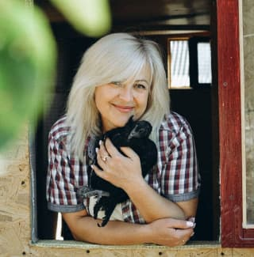
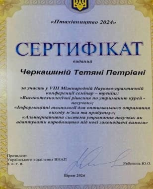

Одна з базових програм по вирощуванню свійської птиці. Саме з неї
краще почати свій шлях у птахівництві.
«Школа птахівництва» допоможе вам:
− мінімізувати втрати поголів‘я
− мати повну уяву про епідеміологічні і бактеріальні
захворювання курей і методи їх лікування
− аналізувати ситуацію у вашому стаді і знаходити правильні
рішення без сторонньої допомоги
− xвороби дешевше попереджати, ніж лікувати.
Від епідемій дешевше
вакцінувати поголів‘я, ніж повністю його втратити, зачинити
домогосподарство на карантин і не мати можливості вирощувати для
своєї родини і постійних покупців якісні продукти харчування.
Розуміння того, як виглядає птиця зсередини , які процеси
відбуваються в її організмі − необхідна умова сучасного, обізнаного
птахівництва
Програма школи:
Перший модуль
Аптечка − мінімум
Велика проблема птахівників- відсутність препаратів для
швидкого реагування на хворобу птиці, особливо на
захворювання, де відлік часу для вирішення проблеми
рахується на години.
Я надаю список препаратів,
які повинні бути в
аптечці птахівника в мінімальній кількості
обов’язково
Крос і порода
Навчимося відрізняти курей за породами і кросами для того,
щоб не бути обдуреними при покупці курчат,
або інкубаційних яєць
Курси по вирощуванню птиці вартість одного курсу 1200 ₴
(інформація доступна необмежений час)
Перепілка
Мій дворічний досвід в перепіловодстві і піврічне навчання у
провідних зоотехніків, допоможе вам
виростити важку птицю
скласти продуктивні маточні стада
готувати корми з необхідною кількістю протеїну власноруч
зробити клітки із підручних матеріалів власноруч
дізнатись про потрібний світловий і тепловий режими для найкращої яйценоскості
Мій досвід у вирощуванні цієї птиці-8 років!
Було багато невдач, хвороби, синюшність птиці, роз‘іхавшися лапи і багато іншого!
Далі - навчання на Науково дослідницькій станції птахівництва.
Я проведу вас за руку, починаючи з інкубаційного яйця, або добового курчати - до забою і переробки м‘яса!
Мій постійний зв’язок з вами, підтримка і відповіді на усі запитання,
а також прорахунок рентабельності утримання цієї птиці на моєму
прикладі - це головний бонус цього курсу.
Я вас запрошую у цікавий світ індиків- смачного і корисного м‘яса.
Це чітка покрокова інструкція вирощування цієї птиці.
Ви зможете пройти цей шлях легко - збережемо ваше поголів‘я, приумножимо ваші гроші і збережемо нерви!
Головний подарунок для власників курсу- моя особиста підтримка і консультації ( безкоштовно)
Виростимо індика вагою 20+ кг впродовж 4-5 місяців разом.
Курс по вирощуванню індика - 12 відео, 8 таблиць.
Хочу представити повний курс по вирощуванню несушки і м‘ясояєчноі курки.
Цей курс підійде тим, хто хоче вирощувати на своєму подвір’ї курей і отримувати від цього процесу повноцінний результат!
Ви зможете:
Побудувати курник
Зробити правильну вентиляцію
Готувати корми самотужки і багато іншого
Курс по вирощуванню несушки - 24 відео, 9 таблиць.
Отримаєте схеми інкубації свійських птахів, які працюють,
як швейцарський годинник на побутових інкубаторах
(розроблені зоотехніками).Бо схеми інкубації з інтернету - не адаптовані до побутових інкубаторів,
якими ми всі користуємось.
Яку птицю інкубуватимемо:
Курка,
Індик,
Перепілка,
Цесарка,
Фазан,
Гуска,
Качка "Мускусна",
Качка "Пекінська".
Я, Тетяна Черкашина - сертифікований птахівник
з восьмирічним досвідом вирощування свійської
птиці на приватному подвір’ї.
Обізнане птахівництво- це птахівництво
майбутнього. Але я вже сьогодні ділюсь
своїми знаннями і досвідом з вами.
Своєю місією я вважаю допомогти починаючім у птахівництві
і людям, у яких є досвід, але негативний - не опустити
рук при перших же труднощах.

Більше 300 людей виростили і інкубували птицю
разом зі мною і дуже задоволені.
Якщо ви тільки збираєтесь тримати птицю для своїх потреб-
вам до мене!
Якщо вже тримаєте, але не все виходить- вам до мене!
Якщо ваша птиця хворіє- вам до мене!
Селекціонери працюють і отримують все більш
продуктивні лінії птиці. А вона, в свою чергу,
потребує правильного утримання, профілактики
захворювань і збалансованого харчування.
Саме цьому я навчатиму у своїй
«Онлайн школі птахівництва». Відрізняюсь тим, що вирощую птицю разом з вами.
І ви бачите мої
перемоги та поразки.
Сама я, також, проходжу курси підвищення
кваліфікації . Для того, щоб ви дізнавались
вчасно про новітні методи утримання свійської
птиці.

Відгуки
Anzhelika Verkhova
Після навчання у Вас, Тетяна, я, нарешті, вважаю себе профі в
птахівництві. Моя птиця в надійних руках, бо потрапити до ветеринара
в Європі- шансів 1/100000. В Литві- так точно. Дякую!
Сімейна ферма ОНІШКО
Наша сімейна ферма в цьому році замовила 200 голів молодняка
несушки. Інші роки я б переживала за здоров‘я курочок. Але не зараз -
бо у нас є Ваша, Таня, підтримка.
Гарна Курка
Завдяки знанням, які отримала у «Школі птахівництва»,
зрозуміла, як
правильно вакцінувати птицю від епідеміологічних
хвороб, годую
збалансовано, не маю ніяких проблем.
Дякую щиро!
Тімина Ферма
Таню, ми давно хотіли відкрити свою справу, але не вистачало знань і впевненості в собі.
Але завдяки Вашій «Школі птахівництва» ця мрія стала реальністю .
Дякуємо Вам за підтримку. Ви наше натхнення ❤️❤️❤️